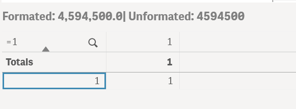

Most set analysis ends up duplicated across measures. You write the same filter three different ways in three different master items, and the moment business logic changes, you're hunting down every copy. There's a better way: one base master measure, and outer set expressions that apply context to it on the fly.
Inner vs outer set expressions
You're already familiar with inner set expressions — the set analysis lives inside the aggregation function:
Sum( {<ReportType={"P&L"}>} Amount )An outer set expression is placed before the aggregation, not inside it. It applies to everything that follows in the same lexical scope:
{<ReportType={"P&L"}>} Sum(Amount) / Count(distinct Customer)
Here, both Sum(Amount) and Count(distinct Customer) are filtered
by the outer set. You write the filter once and it applies to the whole expression.
The key capability that makes this pattern powerful: an outer set expression can also be applied directly to a master measure label.
{<ReportType={"P&L"}>} [AC]
AC is a master measure. The outer set expression injects context into it
without touching its definition.
Building the base master measure
The base master measure is the single definition everything else references. For a P&L amount it might look like this:
$(vFormatNumber(
Sum(
{<ReportType={"P&L"}>}
Amount
)
/ $(vV_SelectedScale)
))Call this master measure AC (Actual). It handles the core aggregation, the scale factor, and the number formatting — all in one place.
Now every other measure in the app can be built around AC, not around a
copy of its formula.
Applying context with outer set expressions
Once you have the base measure, adding context is just a prefix. To show only specific P&L structure lines:
{<"Structure Line"={'Nettoomsättning','Täckningsbidrag (TB)','Resultat före avskrivningar (EBITDA)','Resultat efter skatt'}>}
[AC]To apply a YTD filter defined in a variable:
{<$(vYTD)>}
[AC]
Both of these reference the same AC master measure. If you change the
definition of AC — a new field, a different filter, a scale adjustment —
every expression built on top of it updates automatically. One change, no hunting.
Lexical scoping — controlling what the set affects
By default, an outer set expression affects the entire expression it precedes. Brackets narrow the scope:
( {<$(vYTD)>} Sum(Amount) / Count(distinct Customer) ) - Avg(CustomerSales)
Here the outer set only applies to what's inside the brackets. Avg(CustomerSales)
runs against the current selection, not the YTD filter. The brackets define the
lexical scope of the set expression.
This matters when combining filtered and unfiltered aggregations in the same expression. Without brackets, the set would bleed into every term. With brackets, you control exactly how far it reaches.
Inheritance — inner expressions override outer ones
When you have both an outer set expression and an inner one, the inner takes precedence if it includes a set identifier. Without a set identifier, both are applied together.
Inner set expression with a set identifier — the outer Year={2023}
is ignored for that aggregation:
{<Year={2023}>} Sum(Sales) / Count({1} distinct OrderNumber)
Count({1} distinct OrderNumber) uses the full set ({1} = all
data), completely ignoring the outer year filter.
Inner set expressions without set identifiers — the outer year filter is applied to both:
{<Year={2023}>} Sum({<Status={'Confirmed'}>} Sales_Stream1) + Sum({<UpdatedStatus={'Confirmed'}>} Sales_Stream2)
Here, both inner expressions inherit Year={2023} from the outer set, then
add their own field filter on top.
Number formatting — do it in the expression, not the master measure setting
Qlik has a format setting on the master measure itself. Don't rely on it for this pattern. The master measure format setting only applies when the measure is used inside a visualization as a measure column. It does not carry over when you reference the master measure in a header, a label expression, or a text object.

Num() applied inside the
formula — the formatting follows everywhere, including this text object header.
Right: format defined only in the master measure setting — the setting is ignored outside
a visualization measure column and the raw number is shown.
Put the formatting inside the master measure formula using Num():
Num(
Sum({<ReportType={"P&L"}>} Amount) / $(vV_SelectedScale),
'#,##0.0'
)Now the formatting follows the measure everywhere it's used — in visualizations, headers, and anywhere an outer set expression references it.
Variable functions for consistent formatting
Rather than hardcoding format strings, define them as variable functions that respect the user's locale separators:
Set vFormatPercent = Num($1, '0$(DecimalSep)0%');
Set vFormatNumber = Num($1, '#$(ThousandSep)##0$(DecimalSep)00');
Set vFormatWholeNumber = Num($1, '#$(ThousandSep)##0');
$1 is a placeholder — when you call the variable, you pass the expression as
an argument. Use it in the base master measure like this:
$(vFormatNumber(
Sum({<ReportType={"P&L"}>} Amount) / $(vV_SelectedScale)
))Now the format string is also defined in one place. Switch between percent, number, and whole number by swapping the variable name — the formula inside doesn't change.
$(DecimalSep) and $(ThousandSep) are built-in Qlik system variables
that resolve to the user's locale separator characters. Using them means your format strings
work correctly whether the app is opened in a Swedish, US, or German locale — no hardcoding
commas or dots.
The full pattern in practice
Putting it together: one base master measure with formatting built in, several contextual expressions built on top with outer set expressions:
// Base master measure: AC (Actual)
$(vFormatNumber(
Sum({<ReportType={"P&L"}>} Amount) / $(vV_SelectedScale)
))
// Show only key P&L lines
{<"Structure Line"={'Nettoomsättning','Täckningsbidrag (TB)','Resultat före avskrivningar (EBITDA)','Resultat efter skatt'}>}
[AC]
// YTD only
{<$(vYTD)>} [AC]
// YTD for key lines only
{<$(vYTD), "Structure Line"={'Nettoomsättning','Täckningsbidrag (TB)'}>} [AC]
Each of these is a separate master measure with a different name, but they all reference
the same AC definition. Update AC once — the scale logic, the
report type filter, the format — and all three update with it.
This is the same principle as the $(=MasterMeasure) pattern for totals: one definition, referenced everywhere. The difference here is that outer set expressions let you inject context into the master measure, not just evaluate it at chart level.